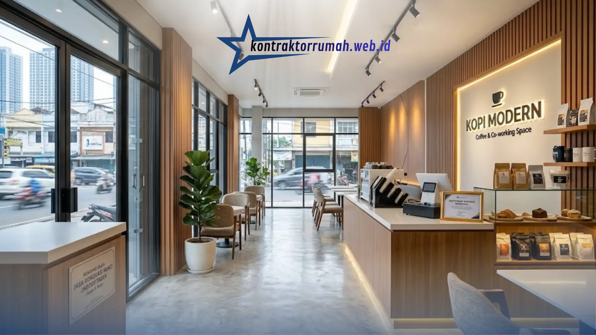

Kawasan Jabodetabek merupakan pusat perputaran bisnis yang sangat dinamis, dengan persaingan usaha yang ketat di hampir setiap sudut jalan. Agar tetap kompetitif, tampilan rumah toko (ruko) harus selalu segar, modern, dan representatif terhadap citra bisnis yang ingin ditampilkan. Jika ruko Anda mulai terlihat kusam, tata letaknya tidak lagi mendukung alur pelanggan, atau instalasi listriknya sudah termakan usia, inilah saatnya mempertimbangkan jasa renovasi ruko profesional.
Poin Penting
- Ruko perlu direnovasi saat fasad pudar, tata letak tidak efisien, atau kapasitas listrik tidak lagi mencukupi kebutuhan usaha.
- Kontraktor profesional menawarkan skema pengerjaan bertahap agar operasional bisnis tetap berjalan.
- Fasad, zonasi ruang, dan kapasitas listrik jadi fokus utama yang paling berdampak pada operasional.
- Renovasi ringan umumnya 2-4 minggu, sedangkan renovasi struktural besar bisa 1-3 bulan.
- Perubahan struktural signifikan membutuhkan pembaruan izin mendirikan bangunan (PBG).
Kapan Ruko Perlu Direnovasi?
Beberapa tanda berikut menunjukkan ruko Anda sudah waktunya diperbarui agar tetap kompetitif dan nyaman digunakan.
- Fasad depan terlihat pudar dan tidak lagi mencerminkan identitas merek.
- Tata letak ruang tidak efisien, sehingga alur pelanggan atau operasional staf terhambat.
- Kapasitas listrik tidak lagi mencukupi untuk peralatan usaha yang terus bertambah.
- Kondisi atap, lantai, atau dinding menunjukkan tanda kebocoran dan kerusakan struktural.
- Rencana ekspansi bisnis membutuhkan penambahan lantai atau perluasan area.
Keuntungan Menggunakan Jasa Renovasi Profesional
Renovasi ruko untuk tempat usaha memiliki standar berbeda dibanding renovasi rumah tinggal, karena menyangkut keberlangsungan operasional bisnis. Berikut nilai tambah yang bisa Anda dapatkan.
Efisiensi waktu. Dalam bisnis, setiap hari tutup berarti kehilangan omzet. Kontraktor renovasi ruko profesional biasanya memiliki timeline kerja yang ketat, termasuk manajemen shift tukang agar pekerjaan bisa berjalan lebih cepat tanpa mengorbankan kualitas.
Standar estetika dan keamanan yang lebih tinggi. Mulai dari instalasi listrik berkapasitas besar untuk kebutuhan usaha, sistem pencahayaan yang menonjolkan produk, hingga finishing interior yang rapi untuk menciptakan kesan profesional di mata pelanggan.

Finishing interior yang rapi dan pencahayaan yang menonjolkan produk jadi nilai tambah renovasi ruko oleh kontraktor profesional.
Kepatuhan terhadap aspek keselamatan. Pekerjaan struktural, kelistrikan, dan sistem utilitas dikerjakan sesuai standar keamanan bangunan komersial, bukan sekadar standar rumah tinggal.
Garansi pekerjaan. Renovasi struktural dan instalasi utilitas umumnya dijamin dalam periode tertentu pasca-pengerjaan, memberi ketenangan pikiran jika muncul masalah teknis di kemudian hari.
Fokus Utama Saat Merenovasi Ruko
1. Fasad depan. Ini adalah wajah bisnis Anda yang pertama kali dilihat calon pelanggan. Pastikan signage, pencahayaan, dan material fasad terlihat menonjol serta konsisten dengan identitas merek.
2. Zonasi ruang. Pemisahan yang jelas antara area pelayanan pelanggan, area display produk, kasir, dan ruang staf atau gudang akan membuat operasional lebih lancar.
3. Sirkulasi udara dan cahaya. Ventilasi dan pencahayaan yang baik meningkatkan kenyamanan pelanggan sekaligus menghemat konsumsi listrik di siang hari.
4. Kapasitas listrik dan jaringan. Sesuaikan dengan kebutuhan peralatan usaha, termasuk kemungkinan penambahan perangkat di masa depan seperti mesin kasir digital atau sistem pendingin tambahan.
5. Aksesibilitas. Pertimbangkan kemudahan akses bagi pelanggan, termasuk area parkir dan jalur masuk yang ramah bagi semua kalangan.
Estimasi Proses Renovasi Ruko
Secara umum, tahapan renovasi ruko meliputi 4 langkah berikut agar dampak terhadap operasional bisnis bisa ditekan seminimal mungkin.
1. Survei dan konsultasi kebutuhan bisnis untuk memahami target operasional dan anggaran.
2. Perencanaan desain dan RAB termasuk penjadwalan agar dampak terhadap operasional toko seminimal mungkin.
3. Pelaksanaan konstruksi dengan opsi pengerjaan di luar jam operasional atau bertahap per area jika toko tidak bisa tutup total.
4. Finishing dan quality check memastikan seluruh detail sesuai spesifikasi sebelum serah terima.
Catatan dari tim Kontraktor Rumah: Kontraktor Rumah beroperasi sebagai mitra konstruksi berbadan hukum PT resmi, siap membantu penyusunan RAB transparan dan penjadwalan kerja yang jelas sejak awal proyek. Manajemen shift tukang, dokumentasi progres berkala, hingga garansi pekerjaan menjadi standar kerja tim dalam menangani proyek renovasi ruko di kawasan Jabodetabek.
FAQ Seputar Jasa Renovasi Ruko Jabodetabek
Beri napas baru pada bisnis Anda sekarang dengan renovasi yang terencana dengan baik, dikerjakan cepat, rapi, dan didukung garansi yang jelas. Kontraktor dengan rekam jejak terbukti akan menjaga operasional bisnis tetap berjalan sekaligus menghadirkan tampilan ruko yang lebih representatif.